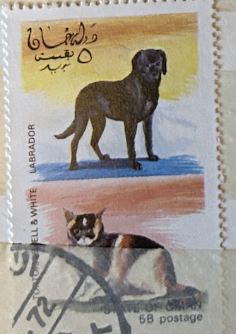
| SOURCE | TITLE| IMAGE MATCH | click to source page |
| Alamy | Arabian postage stamp hi-res stock photography and images - Page 2 - Alamy | 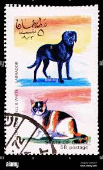 |
| eBay UK | Cats Used United Arab Emirates Stamps for sale | eBay UK | 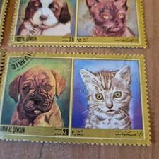 |
| eBay | Vintage Lot DOGS POSTAGE STAMPS Set Romania Dubai Manama Hungary Magyar Posta | eBay | 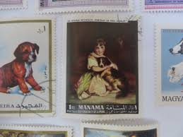 |
| terredascolto.com | 1997 1997 Guinea Block 514 - Complete Unmounted Mint Never Hinged Dogs Stamp Collection | 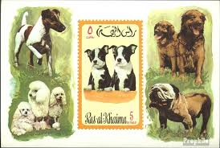 |
| Todocolección | sellos usados oman 1972 sellos perros y gatos o - Buy Stamps about fauna on todocoleccion | 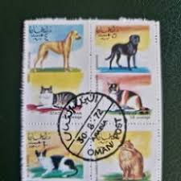 |
| Mystic Stamp | The Seeing Eye | Mystic Stamp Discovery Center | 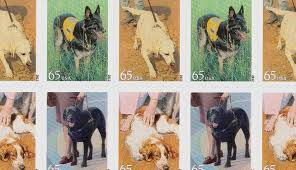 |
| eBay | Dogs Afghan Stamps for sale | eBay | 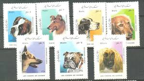 |
| eBay | Dogs Afghan Stamps for sale | eBay | 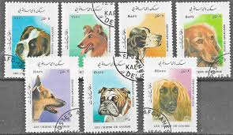 |
| eBay | OMAN MINT Never Hinged SET of 8 Cats and Dogs in 2 se-tenant blocks of Four | eBay | 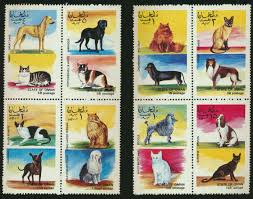 |
| Etsy | World Stamps MNH Pets Dogs Best Pictures of Any Animals Lot of 8 1128 - Etsy | 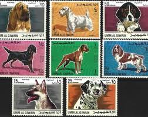 |
| eBay | Dogs Belarusian Stamps for sale | eBay | 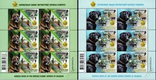 |
| Free stamp catalogue | Stamps from Anguilla - Freestampcatalogue.com - The free online stampcatalogue with over 500.000 stamps listed. | 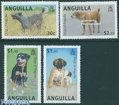 |
| eBay | Mississippi Ducks US Back of Book Duck Stamps for sale | eBay | 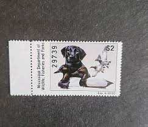 |
| eBay | OMAN Cats and Dogs in 2 se-tenant blocks of Four SET of 8 Diff. CANCELLED CTO | eBay | 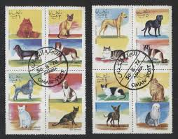 |
| iCollector.com | 1989 Album "America's State Duck Stamps Collection A complete mint stamp collection of new and beaut | 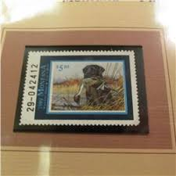 |
| eBay | ISRAEL 2016 - Service Dogs Set of 2 - Scott# 2108-9 - MNH | eBay | 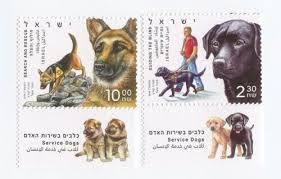 |
| saintstevensthingery.com | 1983 Charles Frace National Retriever Club 559/2382 Framed Print with Stamp – Thingery Previews Postviews & Music | 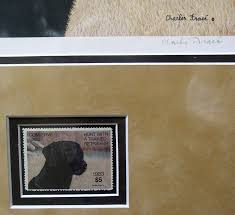 |
| eBay | Ajman Emirate Fauna Pets Dog Poodle Souvenir Sheet 1972 | eBay | 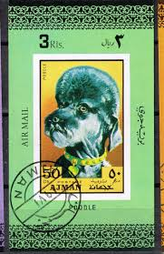 |
| Mesa Stamps | Collectible West Sahara Stamps | 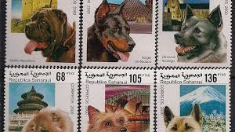 |
| eBay | W OMAN STATE ST 006 MS IBRA MUNICH ON CATS DOGS PERFORATED MINI SHEET | eBay | 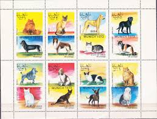 |
| Dennis R. Abel - Stamps for Collectors, LLC | 4604-07 Dogs at Work, Set of Four Single Stamps | Dennis R. Abel - Stamps for Collectors, LLC | 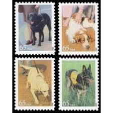 |
| eBay | Guinea Sc 1340-46 Dogs MNH Set + Souvenir sheet Value $ 14.50 | eBay | 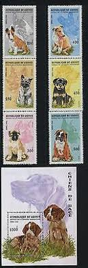 |
| eBay | US 2012 DOGS at WORK 4604-07 SINGLES Seeing Eye Therapy Military - Free USA Ship | eBay | 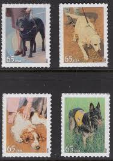 |
| eBay | CANADA 2013 "ADOPT A PET" . SET OF 5 EX. BOOKLET PANE SELF ADHESIVE FINE USED | eBay | 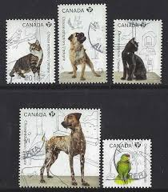 |
| Colnect | Stamp: Labrador Retriever (Canis lupus familiaris) (Cuba(Hunting Dogs) Mi:CU 2110,Sn:CU 2036,Yt:CU 1905,Sg:CU 2268 📮 | 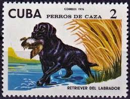 |
| eBay | israel 2016 Sc 2108/9,service dog,set MNH r873 | eBay | 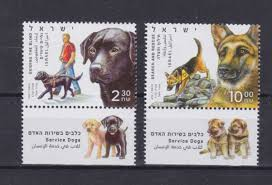 |
| eBay | Mastiff Collectibles for sale | eBay | 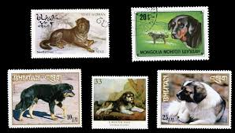 |
| Delcampe | St.Vincent & Grenadines - Mustique Grenadines of St. Vincent-Fauna-dogs | 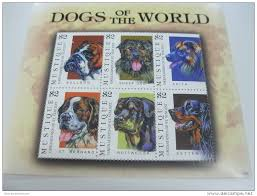 |
| ebid.net | Fujeira 1972 Animal Puppy Airmail 1R Used Stamp on eBid United States | 215571873 | 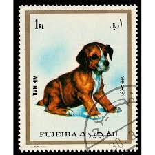 |
| Mystic Stamp | 4604 - 2012 65c Dogs at Work: Seeing Eye Dog - Mystic Stamp Company | 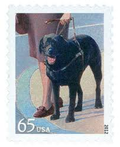 |
| 12 Poodle postage stamps ideas | postage stamps, poodle, postage | 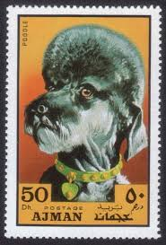 | |
| Alamy | A postage stamp printed in Umm al Qiwain shows cat and dog from series: Different breeds of dogs and cats, circa 1971 Stock Photo - Alamy | 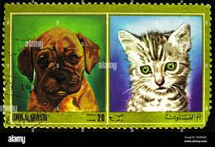 |
| eBay | US 2012 DOGS at WORK 4604-07 PLATE BLOCK of 4 (our choice) Military-FreeShip USA | eBay | 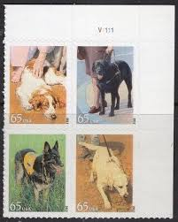 |
| eBay | ANTIGUA & BARBUDA 2000 DOGS MNH - ANT722 | eBay | 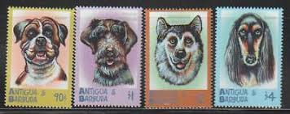 |
| eBay | RAS AL KHAIMA 1971 DOGS MINT VF NH O.G S/S CTO (27aRAS ) | eBay | 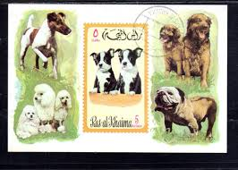 |
| eBay | TUVALU NUKULAELAE 1985 DOGS SET OF 8 STAMPS MNH | eBay | 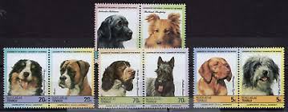 |
| Shutterstock | Umm Al-qiwain Circa 1972 Cancelled Postage Stock Photo 2656212439 | Shutterstock | 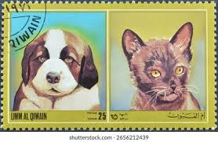 |
| Getty Images | Postage stamps honouring dogs; postage stamps depicting Akia and... News Photo - Getty Images | 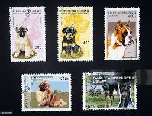 |
| eBay | UMM AL QIWAIN DOGS Adorable SAINT BERNARD PUPPY | eBay | 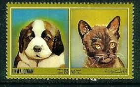 |
| PicClick | GIBRALTAR OLD MAIL Horse Cariiage Souvenir Sheet MNH 1990 $4.99 - PicClick | 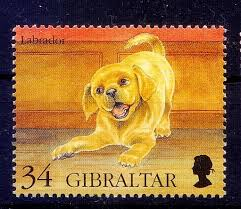 |
| Free stamp catalogue | Stamps from Ras al-Khaimah - Freestampcatalogue.com - The free online stampcatalogue with over 500.000 stamps listed. | 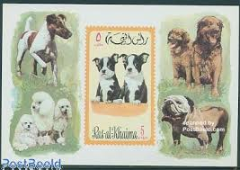 |
| eBay | Mongolia Dogs and Step Yurts stamp 1976 | eBay | 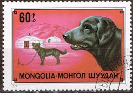 |
| eBay | Anguilla 2005 - Dogs - Set of 4 Stamps - Scott #1141-4 - MNH | eBay | 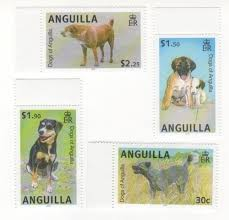 |
| Alamy | A postage stamp printed in Fujairah and shows a Puppy, circa 1973 Stock Photo - Alamy | 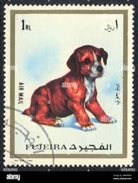 |
| eBay | Ras Al Khaima 5 Ryals Dogs Stamp Sheet Block CANCEL | eBay | 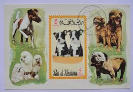 |
| eBay | Misc Stamps Lot Of 31 Plus A Block | eBay | 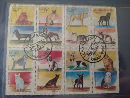 |
| Linns Stamp News | U.S. 2012 Dogs at Work se-tenant pane in demand | 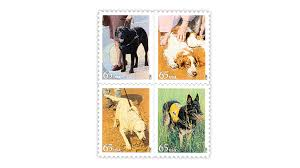 |
| eBay | 4 SMALL MATTED UNUSED U.S. STAMPS OF DOGS, EACH FEATURING 2 BREEDS, 1988 | eBay | 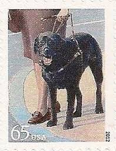 |
| Alamy | UMM AL-QUWAIN - CIRCA 1972: a stamp printed in the Umm al-Quwain shows Puppy and Kitty, circa 1972 Stock Photo - Alamy | 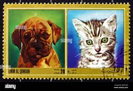 |
| eBay | DOGS'' , STATE OF OMAN.- S/ SHEET {16} | eBay | |
| Dreamstime.com | Set of Stamps Printed in Ras-al-Khaimah Shows Dogs Editorial Photo - Image of stamps, nature: 182639066 | |
| eBay | guernsey 2023 the kennel club set of 6 unmounted mint, mnh | |
| eBay | ANGUILLA, 2005,,DOGS, 4v. MNH, | eBay | |
| Blogger.com | New Stamps for Dog Lovers - Rainbow Stamp Club | |
| Dreamstime.com | Animals. Young Green Chameleon Stock Image - Image of branch, nature: 124677323 | |
| Blogger.com | Commonwealth Stamps Opinion: 1211. 🇯🇪 Jersey Post Commemorates Frankenstein. | |
| eBay | Umm Al Quiwain Dogs 8 stamps set 1970 MNH | eBay | |
| buyhungarianstamps.com | 126-134 Georgia - Prehistoric Animals (MNH) – Eastern Europe Postage Stamps | Hungaria Stamp Exchange | |
| eBay | Dogs British PHQ Cards for sale | eBay |